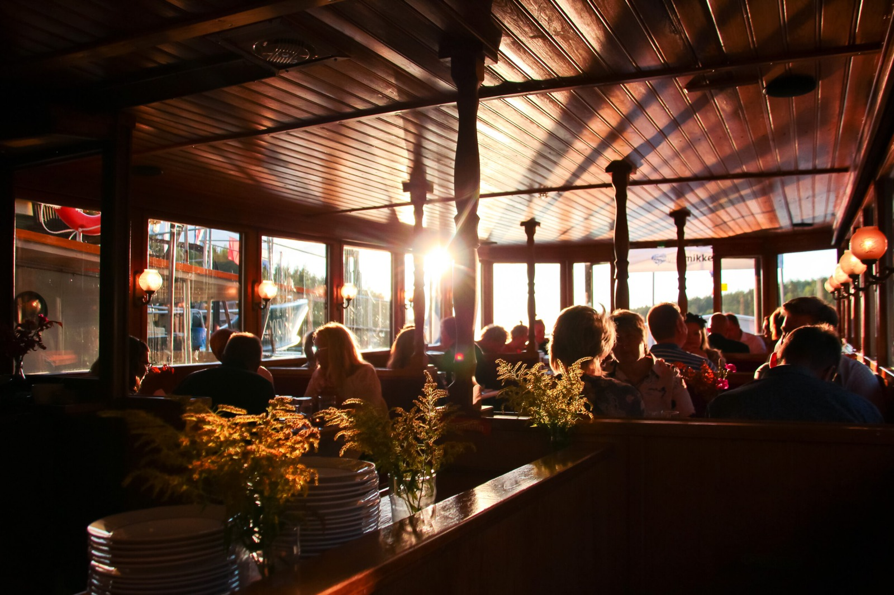
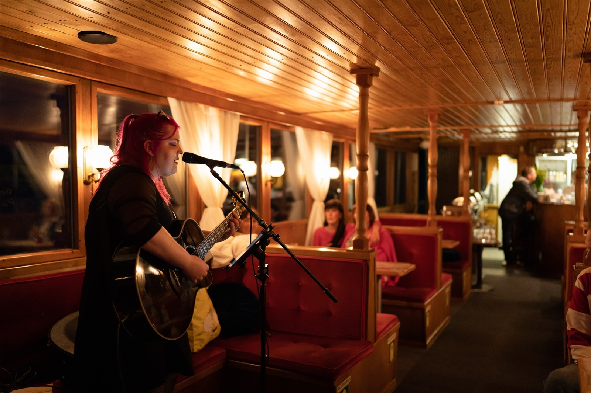
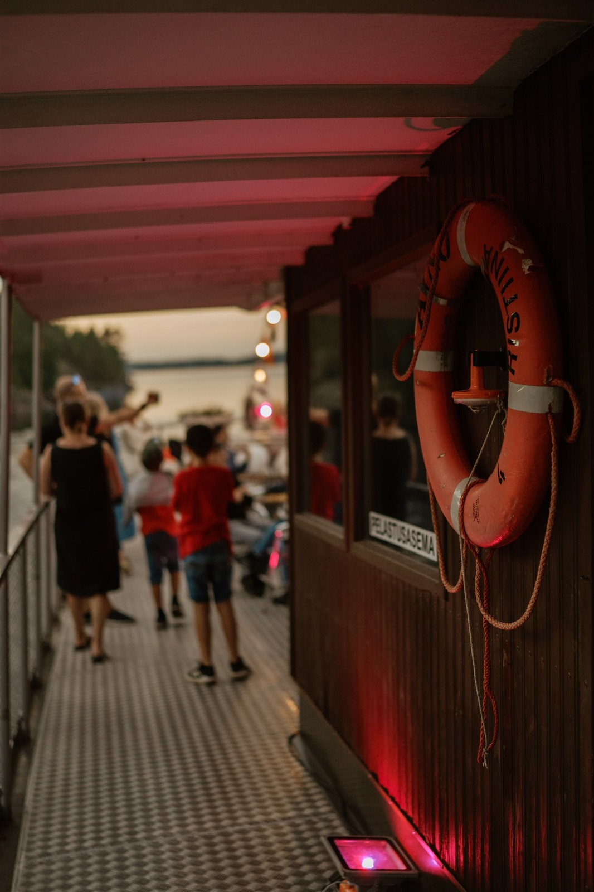
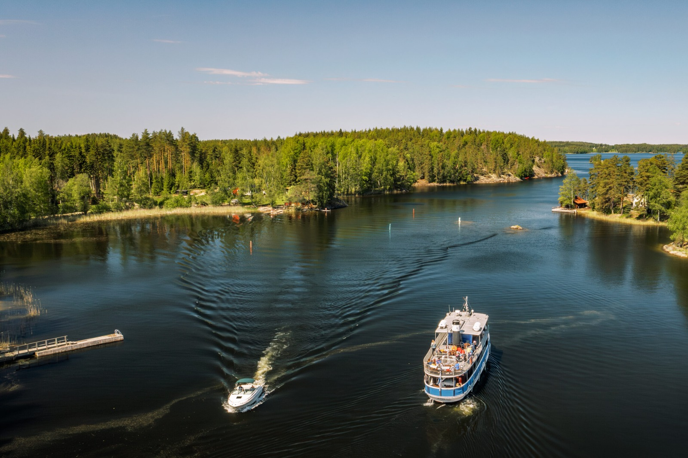
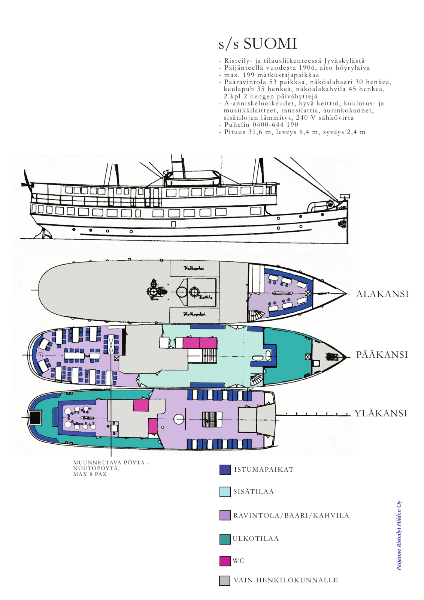
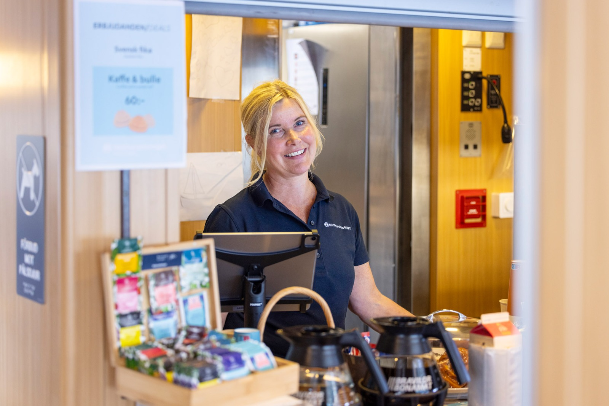
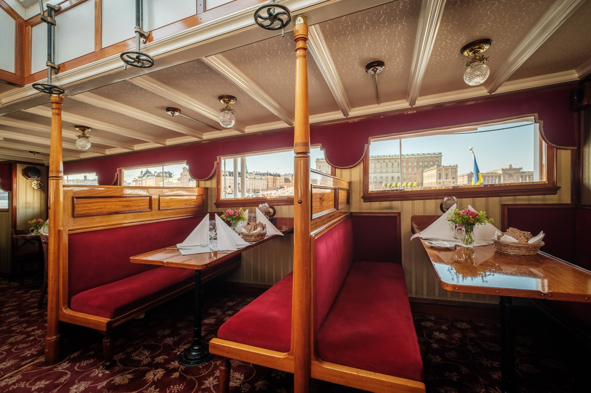
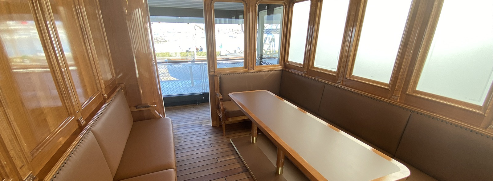

体温调节 · 船舱餐厅
回到试玩 →餐厅、供餐区、入口、外部甲板与上下层通道构成连续船舱。暖沙褐色蛇采用直立前身与紧凑盘绕，搭配橄榄针织帽和锈红围巾。座垫接触阴影与桌沿遮挡来自实际几何。船舱主镜头采用像素景深，头部与衣物保持清晰。 像素对照 →

船舱与卡座参照








餐厅、供餐区、入口、外部甲板与上下层通道构成连续船舱。暖沙褐色蛇采用直立前身与紧凑盘绕，搭配橄榄针织帽和锈红围巾。座垫接触阴影与桌沿遮挡来自实际几何。船舱主镜头采用像素景深，头部与衣物保持清晰。 像素对照 →







